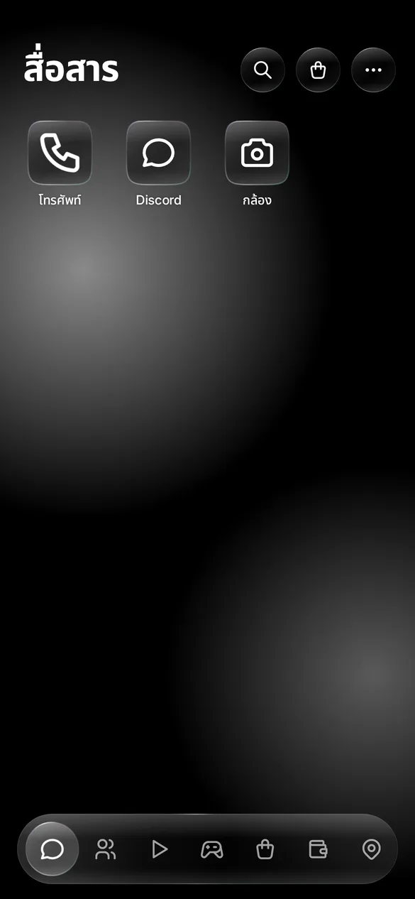
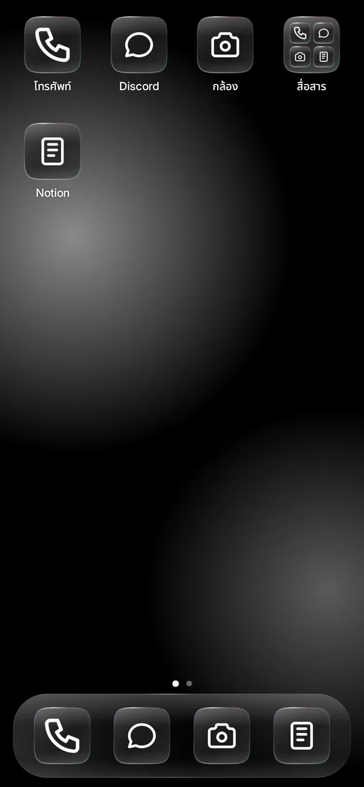
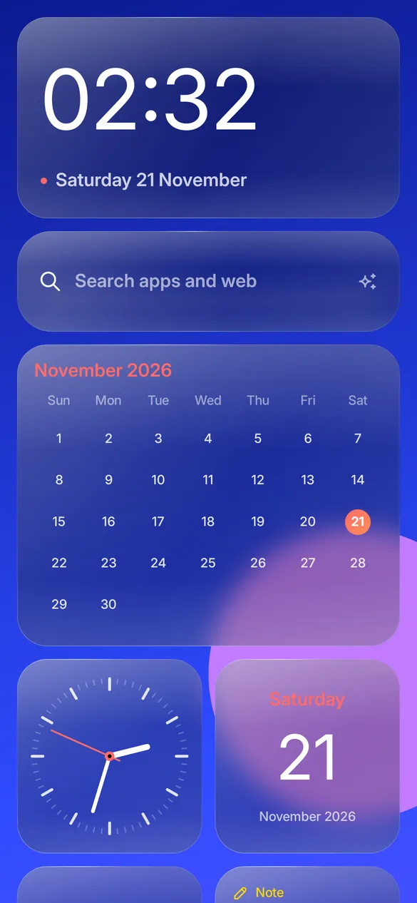
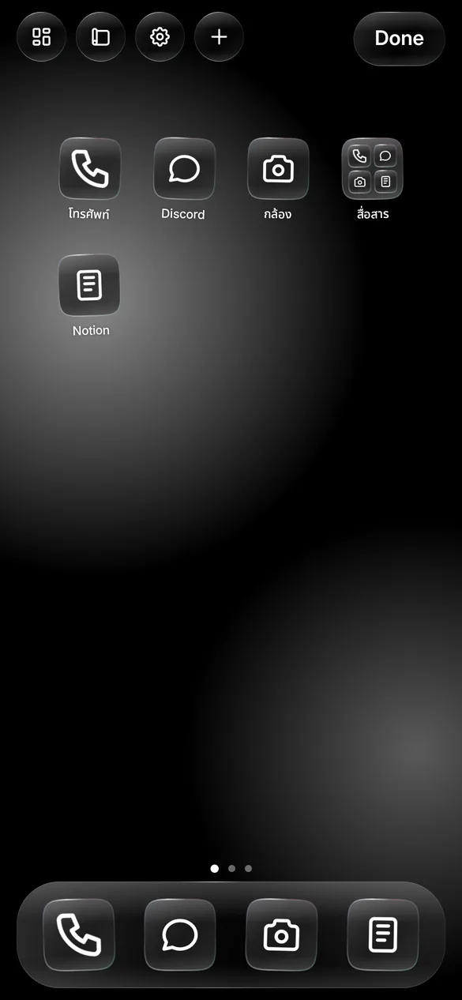
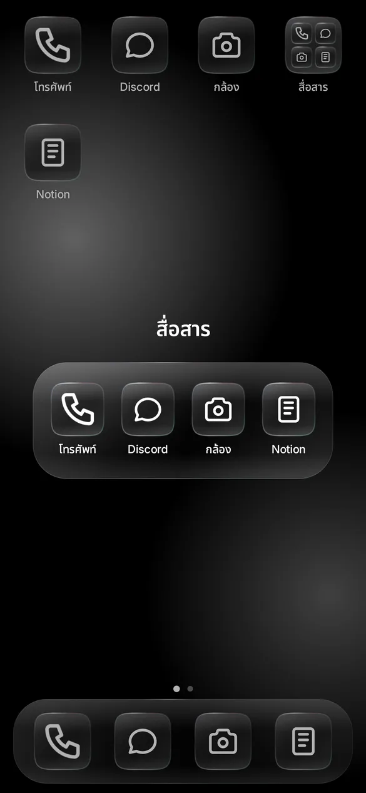
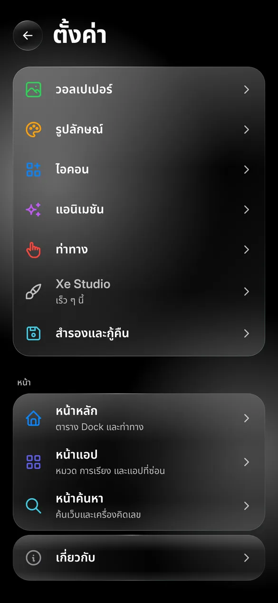

Liquid Glass
Dock แถบหมวด ปุ่ม และเมนูเป็นกระจกเบลอ มีขอบสะท้อนแสงและหักเหภาพด้านหลัง
Android 10 ขึ้นไป · ไฟล์ APK
คลีน มินิมอล ไอคอนกระจกดำ จัดหมวดแอปให้อัตโนมัติ Widget กระจก และแอนิเมชันลื่นทุกการแตะ
Xe Studio ยังอยู่ระหว่างพัฒนา ตอนนี้สร้างธีมไอคอนได้ วอลเปเปอร์ วิดเจ็ต และร้านธีมกำลังตามมา



ปัดขึ้นดูหมวด ปัดซ้ายขวาเปลี่ยนหมวด แตะเปิดแอป กดค้างดูเมนู
ธีม
สไตล์ไอคอน
ทรงไอคอน
ลองเอียงมือถือ แสงบนขอบกระจกจะขยับตาม
Dock แถบหมวด ปุ่ม และเมนูเป็นกระจกเบลอ มีขอบสะท้อนแสงและหักเหภาพด้านหลัง
กระจกดำ ขาวดำ กระจกสี กระจกใส หรือต้นฉบับ เลือกทรงได้ 5 แบบ เปลี่ยนชื่อแอปและใส่รูปไอคอนเองได้
ปัดขึ้นเพื่อดูแอปแยกหมวด จัดลำดับ ซ่อน เพิ่ม ลบ หรือให้ระบบจัดแอปใหม่ให้
Widget ของ Xe 10 แบบ นาฬิกา ปฏิทิน ค้นหา รูปภาพ โน้ต แบตเตอรี่ และใช้ Widget ของแอปอื่นได้
นำเข้ารูป ลากและซูมให้พอดี ปรับความมืดและความเบลอ แล้วตั้งเป็นหน้าหลักหรือหน้าล็อก
มีเวอร์ชันใหม่ แอปเด้งเตือนภายในไม่กี่นาที แตะครั้งเดียวก็ดาวน์โหลดได้ ติดตั้งทับได้ การตั้งค่าไม่หาย
10 ธีมในแอป เปลี่ยนวอลเปเปอร์ สไตล์ไอคอน และทรงไอคอนพร้อมกันในครั้งเดียว
แสงบนกระจกขยับตามการเอียงมือถือ กดค้างที่ว่างบนหน้าโฮมแล้วลาก จะมีเลนส์กระจกตามนิ้ว
เขียนบอกปัญหาแล้วส่งอีเมลได้จากในแอป ถ้าแอปปิดเอง ครั้งหน้าจะถามว่าจะส่งรายงานไหม
10 ธีมเดียวกับในแอป (ตั้งค่า › ธีม) แตะเพื่อลองบนมือถือด้านบน




รองรับ Android 10 ขึ้นไป · ทดสอบบนเครื่องจริง Samsung Galaxy A16 5G
มือถือเตือนทุกแอปที่ไม่ได้มาจาก Play Store กด “ติดตั้งต่อ” ได้เลย Xe Launcher ไม่ขอสิทธิ์อ่านข้อมูลส่วนตัว และโค้ดทั้งหมดเปิดให้ดูบน GitHub
มีเวอร์ชันใหม่ แอปจะเด้งแจ้งเตือน แตะแจ้งเตือนเพื่อดาวน์โหลด แล้วติดตั้งทับ ทุกอย่างอยู่ครบ หรือเข้า ตั้งค่า › เกี่ยวกับ › ตรวจหาอัปเดต
น่าจะใช้ได้กับ Android 10 ขึ้นไปทุกยี่ห้อที่ให้เปลี่ยนแอปหน้าหลักได้ เช่น Samsung, Xiaomi, OPPO, vivo, realme และ Pixel แต่ตอนนี้ทดสอบบนเครื่องจริงแค่ Samsung Galaxy A16 5G ถ้าเจออะไรแปลกบนเครื่องคุณ ช่วยแจ้งบัคได้เลย
ตั้งค่า › แอป › เลือกแอปเริ่มต้น › แอปหน้าหลัก แล้วเลือกหน้าโฮมเดิม (บน Samsung คือ One UI Home)
กระจกเบลอและลูกเล่นใช้แรงเครื่องบ้าง ถ้าอยากประหยัด ตั้งค่า › รูปลักษณ์ › คุณภาพกระจก › ประหยัด และปิดแสงตามการเอียงได้